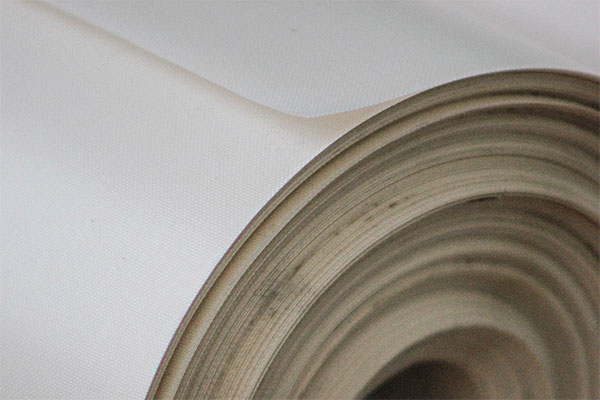
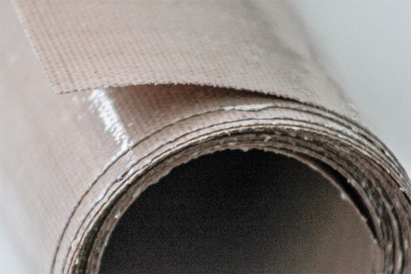
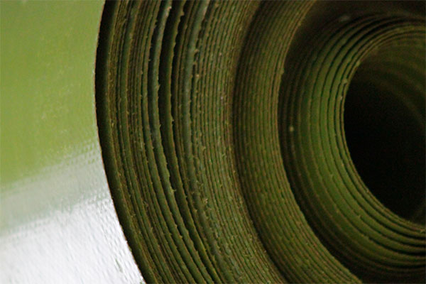

Области применения фтор-лакотканей на основе фторопласта:
— теплоизоляция термоэлементов в машинах и приборах, осуществляющих сварку термопластичных материалов типа полиэтилен, полиэтилен-целлофан и других, в том числе полимерной упаковки пищевых продуктов, лекарственных средств и медицинских изделий при непосредственном контакте с нагревательным элементом;
— для транспортных конвейерных лент, предназначенных для перемещения клейких и липких масс, в том числе в пищевой и медицинской промышленностях;
— для антипригарных подложек на противнях термических печей в пищевых отраслях промышленности;
— для применения в качестве электроизоляционного материала;
— для пазовой изоляции электрических машин;
— для изготовления мембран;
— для антикоррозийной изоляции стальной арматуры;
— для изготовления анти-адгезионного фторопластового материала с липким слоем;
— для пазовой изоляции электродвигателей погружных насосов;
— для изоляции электрических машин и проводов;
— для приготовления электроизоляционных химически стойких материалов;
— для теплоизоляции контактов заварочных машин при сварке термопластических материалов в качестве анти-адгезионной прокладки.
ООО «СВС» приглашает к сотрудничеству в сфере поставок лакоткани на основе фторопласта марок Ф-4Д-Э01-(А,Б), Ф-4ДТ-13-027-(А,Б), Ф-4Д-Э007-A, ТСФ-А,Б